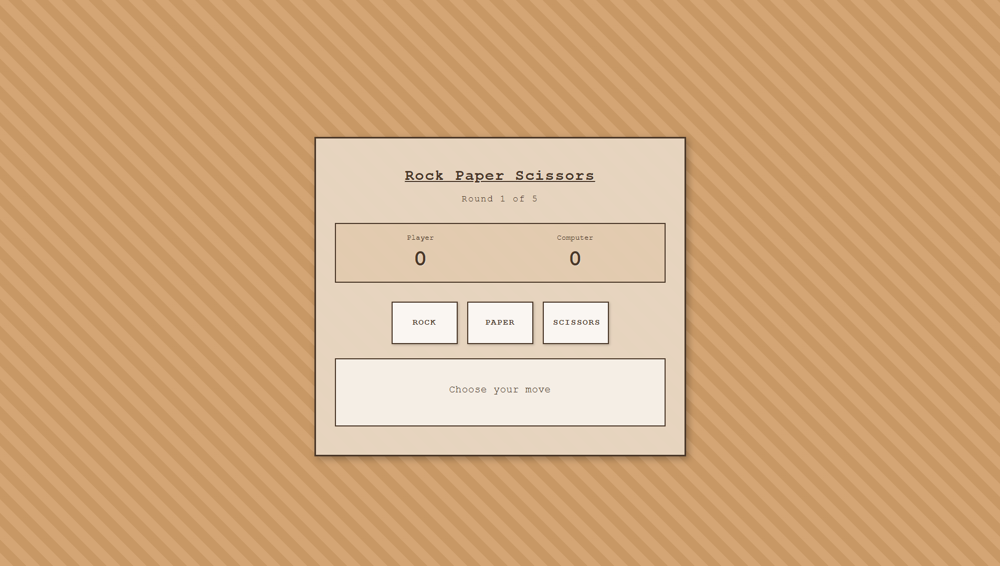

My Projects
Here are some of the projects I've built while learning web development. Each project demonstrates different skills and technologies.

Portfolio Landing Page
A professional portfolio landing page built from scratch with HTML and CSS. Features include responsive design for all devices, smooth animations, gradient backgrounds, hover effects, and a fully functional dark mode toggle. Deployed live using GitHub Pages.

Rock Paper Scissors Game
An interactive Rock Paper Scissors game built with HTML, CSS, and JavaScript. Features include a best-of-five tournament format, real-time score tracking, computer opponent with randomized moves, round progression display, and intuitive button-based controls. Deployed live using GitHub Pages.

Creative Writings
A collection of academic and creative essays exploring political geography, urban planning, literature, art history, and music culture through thoughtful analysis and personal reflection. Topics range from Nicaragua's political climate to Frida Kahlo's artistic legacy and the emergence of Bossa Nova.

Odin Recipes
A recipe website created as part of The Odin Project curriculum. Demonstrates HTML fundamentals, semantic structure, proper document organization, and clean code practices. Built as a foundation project for learning web development.